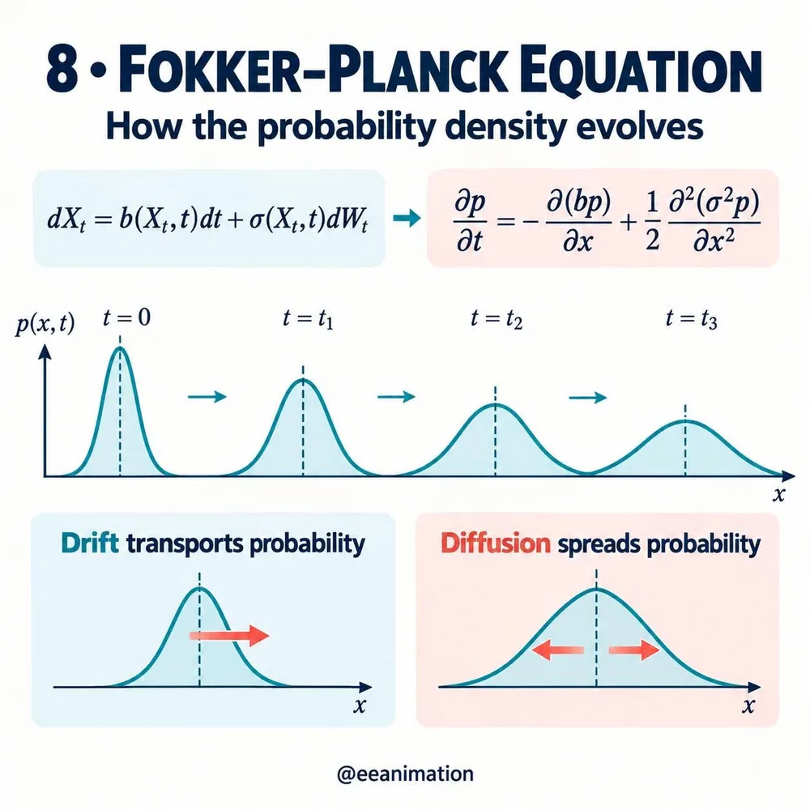

기둥 4 · 분포와 멈춤 · 10장
포커-플랑크 방정식 — 확률 구름은 이렇게 움직인다
경로 하나 대신 「분포 전체」의 변화를 보는 식
경로 하나 대신 「분포 전체」의 변화를 보는 식
핵심 질문 — 경로 하나하나를 따라가지 않고, 「확률이 어디에 얼마나 있나」 전체가 시간에 따라 어떻게 바뀌는지 알 수 있을까?
09장에서는 SDE의 경로를 하나씩 그렸어요. 경로를 수천 개 모아 한 시각에서 세로로 자르면(02장) 분포가 보여요. 이 분포를 매끄러운 곡선, 확률밀도 p(x, t)로 그리고, 그 곡선이 시간에 따라 어떻게 바뀌는지 알려 주는 식이 포커-플랑크 방정식이에요. 결론은 간단해요. 표류는 구름을 옮기고, 확산은 구름을 퍼뜨려요.
숫자 요약은 이 장의 예시 계산에서 나온 값입니다(실제 데이터가 아닌 설명용 값).
2조 발표 시간이에요. 오늘은 경로 대신 「구름」을 봅니다. 1조는 질문 준비하세요.
2조 발표자 모아예요! 먼지 입자 2000개를 풀어 놓고 구름이 움직이는 걸 보여 드릴게요.
행렬·벡터, 복잡한 공식을 몰라도 됩니다. 그림을 움직여 보고, 밑줄 친 말을 누르면 뜻이 나옵니다.
dX = b dt + σ dW 이면 ∂p/∂t = −∂(bp)/∂x + ½∂²(σ²p)/∂x².
−∂(bp)/∂x 조각이 확률을 b 방향으로 실어 날라요.
½∂²(σ²p)/∂x² 조각이 봉우리를 깎고 골을 메워요. 넓이는 늘 1.
원자료(영어) 그림 09번을 한국어로 다시 그렸어요. 원자료에서 바로잡은 곳은 이 그림에 이미 반영했어요.
이 페이지 사용법: 밑줄 친 말을 누르면 뜻이 나옵니다(Esc로 닫기). 단계마다 그림을 직접 움직여 보고, 끝의 확인 퀴즈로 점검하세요. 앞 장: 09 확률미분방정식 — 표류와 확산이 함께 미는 세계
2조(모아·X2·X3)가 「입자 2000개의 막대그래프가 밀도 곡선이 되는 과정」과 「표류는 옮기고 확산은 퍼뜨린다」를 발표하고, 1조가 질문합니다.
막대그래프 2000개짜리 그림, 내가 그렸어.
1조 질문은 「넓이」로 할게요.
「1년 뒤 주가가 110~120일 확률」 같은 질문은 경로 하나가 아니라 분포가 답이에요.
경로 수천 개 대신 곡선 하나의 변화만 계산하면 돼요. 정확하고 빨라요.
09장 SDE(경로)와 10장 포커-플랑크(분포)는 같은 b, σ를 써요. 표지 그림의 왼쪽(경로)과 오른쪽(밀도)이 화살표로 이어지는 이유예요.
편미분 기호 ∂가 처음 나오지만, 식 전체를 외울 필요는 없어요. 「두 조각이 각각 무슨 일을 하나」만 읽으면 됩니다.
상황 질문 — 운동장 한가운데서 학생 2000명이 동시에 출발해 아무렇게나 걸어요. 5분 뒤 운동장을 위에서 찍으면 사람들은 어떤 모양으로 퍼져 있을까요?
p(x, t)는 확률이에요? 값이 1보다 클 수도 있다던데요.
학교 수학으로 보면: 확률 자체가 아니라 「확률의 밀도」예요. 인구 밀도(㎢당 사람 수)처럼, 구간 폭을 곱해야 확률이 돼요. 그래서 폭이 좁으면 값이 1보다 클 수 있어요.
| 식 조각 | 읽는 법 | 뜻 |
|---|---|---|
| p(x, t) | 피 엑스 티 | 시각 t, 위치 x 근처의 확률 밀도 |
| p(x, t) × Δx | 밀도 곱하기 폭 | x 근처 폭 Δx 구간에 있을 확률 |
| ∫ p(x, t) dx = 1 | 곡선 아래 넓이는 1 | 어딘가에는 반드시 있으므로 전체 확률 1 |
표류 0, 확산 1, 0에서 출발 → p(x, t)는 평균 0, 분산 t인 정규분포 곡선
t = 0.5: 봉우리 높이 1/√(2π × 0.5) ≈ 0.564
t = 4: 봉우리 높이 1/√(2π × 4) ≈ 0.199
봉우리는 1/√t로 낮아지고, 폭은 √t로 넓어져 넓이 1 유지
봉우리가 낮아지는 만큼 옆으로 넓어지니까 넓이는 그대로구나. 사람이 사라지는 게 아니라 흩어지는 거예요.
운동장 학생들을 위에서 찍으면 처음엔 가운데 몰려 있다가 점점 넓게 퍼져요. 사람 수는 그대로인데 「한 곳에 몰린 정도(밀도)」만 낮아져요.
한 시각의 위치 분포를 매끄러운 곡선으로 그린 것이 확률밀도 p(x, t)예요. 곡선 아래 넓이는 늘 1이에요. 원자료 오른쪽 「Evolving probability density」 그림이에요.
2조 발표 첫 장! 시각 t를 0.25부터 4까지 올리며 막대와 빨간 곡선을 비교하세요.
막대가 입자 2000개, 빨간 선이 확률밀도예요. 거의 겹치죠?
봉우리가 낮아지니까 입자가 줄어드는 거죠?
입자는 2000개 그대로야. 막대가 옆으로 퍼졌을 뿐.
원자료 표지 오른쪽 「Evolving probability density」: t₁ → t₂ → t₃로 갈수록 낮고 넓어지는 밀도 곡선.

상황 질문 — 바람 부는 날 굴뚝 연기는 바람 방향으로 떠밀려 가면서 동시에 옆으로 퍼져요. 「떠밀림」과 「퍼짐」을 각각 식으로 쓸 수 있을까요?
∂ 기호가 세 개나 있어요. 이 식을 꼭 풀어야 해요?
학교 수학으로 보면: 풀 필요는 없어요. 고등학교 「미분 = 변화율」만 쓰면 읽을 수 있어요. ∂는 「다른 건 고정하고 하나만 바꿨을 때의 변화율」이에요.
| 식 조각 | 읽는 법 | 뜻 |
|---|---|---|
| ∂p/∂t | 피의 시간 변화율 | 이 자리의 확률이 얼마나 빨리 늘거나 주는가 |
| −∂(bp)/∂x | 표류 조각 | 확률이 b 방향으로 흘러가며 곡선을 「옮김」 |
| +½∂²(σ²p)/∂x² | 확산 조각 | 봉우리(볼록)는 깎고 골(오목)은 메워 곡선을 「퍼뜨림」 |
| b, σ 일정 → N(x₀ + bt, σ²t) | 답 | 가운데는 bt만큼 이동, 분산은 σ²t만큼 증가 |
b = 0.5, σ = 1, 시작 근처 분산 0.05
t = 1.5: 가운데 0.5 × 1.5 = 0.75, 분산 0.05 + 1.5 = 1.55
t = 4: 가운데 2, 분산 4.05, 표준편차 약 2.01
b를 0으로 하면 가운데는 제자리, 분산만 늘어요
식이 길어 보였는데 결국 「가운데는 b로 옮기고, 분산은 σ²로 늘린다」였어요. 09장 SDE 숫자랑 똑같네요!
굴뚝 연기는 바람(표류)이 통째로 옮기고, 공기의 떨림(확산)이 넓게 번지게 해요. 바람이 없으면 제자리에서 번지기만, 떨림이 없으면 모양 그대로 떠밀려 가기만 해요.
포커-플랑크 방정식 ∂p/∂t = −∂(bp)/∂x + ½∂²(σ²p)/∂x² 은 SDE dX = b dt + σ dW 와 짝이에요. 원자료 「8 · Fokker–Planck」의 「Drift transports probability」, 「Diffusion spreads probability」가 두 조각의 뜻이에요.
2조 발표 둘째 장! 표류 b만, 그다음 확산 σ만 움직여 세 곡선을 보세요.
1조 질문이요. 봉우리가 낮아지면 확률이 사라지는 거예요?
넓이 숫자를 보세요. 셋 다 1이에요! 사라지는 게 아니라 퍼지는 거예요.
원자료 「8 · Fokker–Planck equation」: 위쪽 SDE → 방정식, 가운데 t = 0, t₁, t₂, t₃ 곡선, 아래 「Drift transports」·「Diffusion spreads」.

상황 질문 — 방을 난방하면서 창문도 조금 열어 두면, 온도가 끝없이 오르지 않고 어느 온도 둘레에서 머물러요. 확률 구름도 이렇게 「더는 안 변하는」 모양이 있을까요?
「정상 분포」는 ∂p/∂t = 0이라는 뜻이에요?
학교 수학으로 보면: 네. 「시간이 지나도 이 자리의 확률이 안 바뀐다」 — 변화율이 0이에요. 고등학교 미분에서 「기울기 0 = 극값」을 찾는 것과 비슷한 생각이에요.
| 식 조각 | 읽는 법 | 뜻 |
|---|---|---|
| dX = −θX dt + σ dW | 평균 회귀 (목표 0) | 멀어질수록 θ배 세게 끌어당김 |
| ∂p/∂t = 0 | 정상 상태 | 옮김과 퍼뜨림이 자리마다 정확히 맞섬 |
| N(0, σ²/(2θ)) | 정상 분포 | 가운데 0, 표준편차 σ/√(2θ) |
σ = 1, θ = 1: 평형 표준편차 1/√2 ≈ 0.71
θ = 2: 1/√4 = 0.5 (세게 당기면 폭이 좁음)
θ = 0.25: 1/√0.5 ≈ 1.41 (약하게 당기면 폭이 넓음)
−3에서 출발해도 가운데가 −3e^(−θt)로 0에 다가가요
당기는 힘이 4배면 폭은 절반. 퍼짐과 당김의 줄다리기에서 폭이 정해지는구나.
난방(퍼뜨리는 힘)과 환기(되돌리는 힘)가 맞서면 방 온도는 어느 값 둘레에서 출렁일 뿐 더는 오르지도 내리지도 않아요.
끌어당기는 표류와 퍼뜨리는 확산이 자리마다 맞서 ∂p/∂t = 0이 된 분포를 정상 분포라 해요. 평균 회귀 모형의 정상 분포는 N(0, σ²/(2θ))예요.
심화 단계! θ를 바꾸고 시각 t를 올려 빨간 곡선이 초록 점선(평형)에 닿는 모습을 보세요.
시간이 지나면 2단계처럼 계속 퍼지겠죠?
t를 6까지 올려 봐. 초록 점선에서 멈추잖아.
정상 상태 0 = −d(bp)/dx + ½ d²(σ²p)/dx²에서 흐름(확률 유량) J = bp − ½ d(σ²p)/dx가 0이면 p(x) ∝ (1/σ²) exp(∫ 2b/σ² dx). b = −θx, σ 상수이면 p ∝ exp(−θx²/σ²) = N(0, σ²/(2θ)).
시아가 AI에게 「확산만 있는 과정(표류 0)에서 시간이 지나 밀도 곡선의 봉우리가 절반으로 낮아졌어요. 전체 확률은 어떻게 됐나요?」라고 물었더니 이렇게 답했어요.
AI가 밀도 곡선의 「높이」를 확률로 말하면 「넓이로 계산했나요?」라고 물어보세요. 밀도는 높이가 아니라 넓이가 확률이에요.
표류 0, 확산 1인 밀도 곡선을 t = 0.5, 2, 8에서 직접 넓이를 더해 비교했어요.
「봉우리가 절반, 또 절반으로 낮아졌잖아. 확률이 새어 나간 게 분명해.」
「봉우리는 낮아져도 옆으로 넓어지니까 넓이는 늘 1이에요!」
누가 맞을지 먼저 예상해 보고 단추를 누르세요. 판정은 계산 결과로만 합니다.
개념정리 흐름: 확률밀도 p(x, t) → 포커-플랑크 방정식 → 정상 분포 (평형)
| 개념 | 한 줄 뜻 | 일상 비유 | 비유의 한계 |
|---|---|---|---|
| 확률밀도 | x 근처의 확률 밀도, 넓이가 확률 | 운동장 위 학생 지도 | 값이 1보다 클 수 있어요(밀도라서) |
| 포커-플랑크 방정식 | ∂p/∂t = −∂(bp)/∂x + ½∂²(σ²p)/∂x² | 바람에 실려 번지는 연기 | b, σ가 위치마다 바뀌면 보통 컴퓨터로 풀어요 |
| 표류 = 옮김, 확산 = 퍼뜨림 | 가운데 b × t, 분산 σ² × t | 바람과 공기 떨림 | 경계(벽)가 있으면 조건이 더 필요해요 |
| 정상 분포 | 옮김과 퍼뜨림이 맞서 안 변하는 분포 | 난방과 환기가 맞선 방 | 입자는 계속 움직여요 |
오늘의 한 줄: 경로를 많이 모으면 구름, 구름은 표류로 옮겨 가고 확산으로 퍼진다.
2조 발표 끝! 넓이 1 질문, 저희가 막았어요!
넓이 1, 이번엔 제가 맞혔어요!
봉우리만 보고 의심했다가 졌어… 넓이를 봤어야 했는데.
다음 장 예고: 11장은 조별 토론이에요. 「언제 멈출지」를 정하는 규칙 중 어떤 것이 반칙(미래 엿보기)인지, 정지시간으로 가려내요.